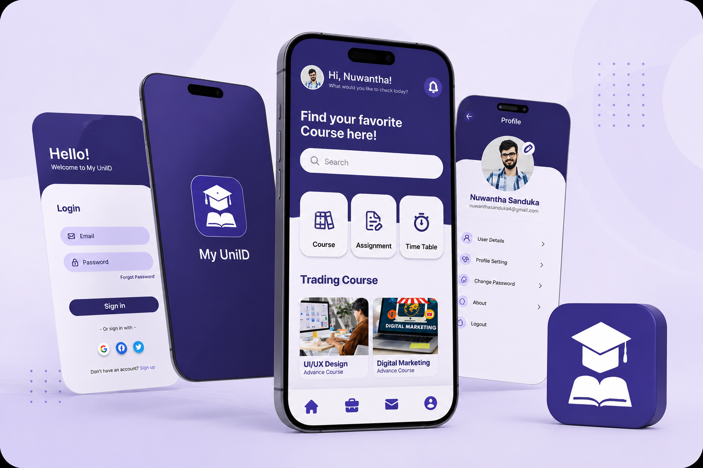
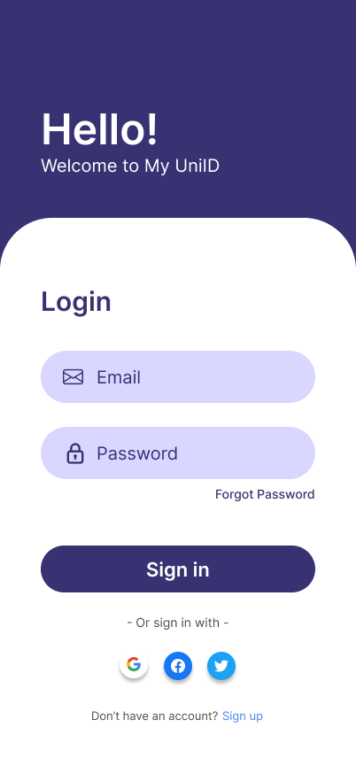
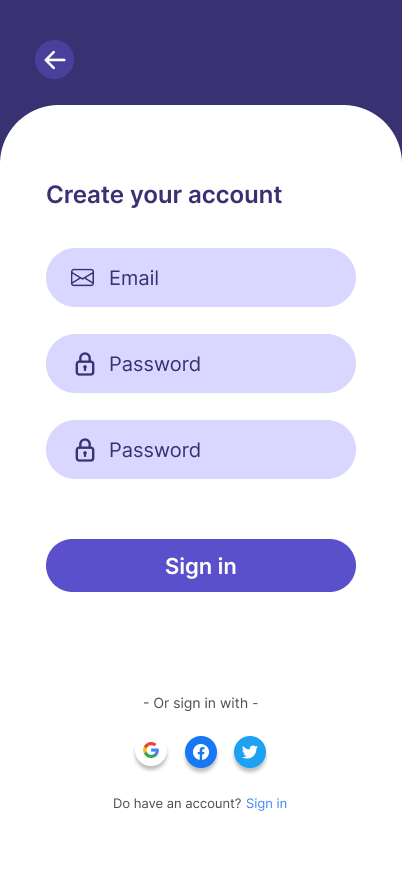
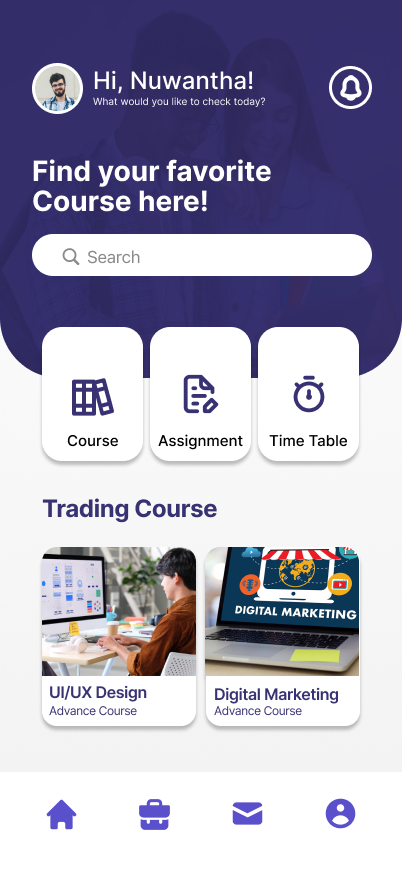
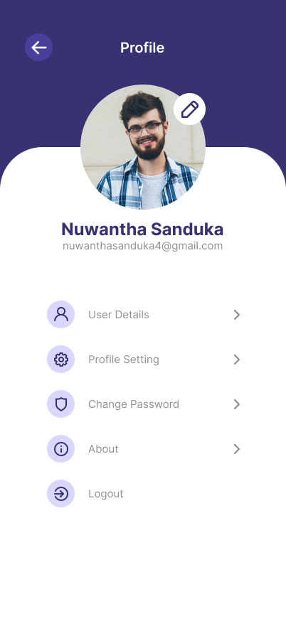
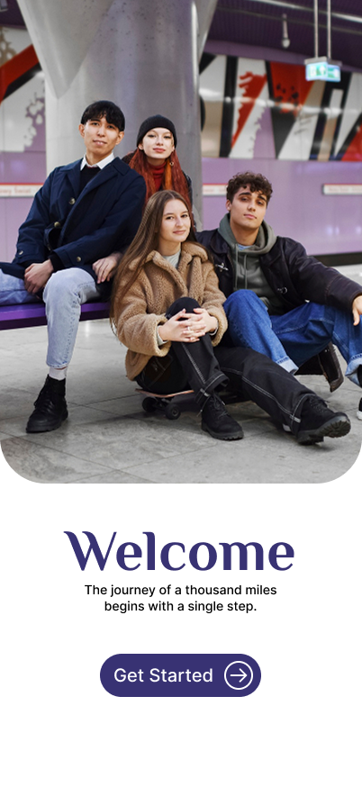
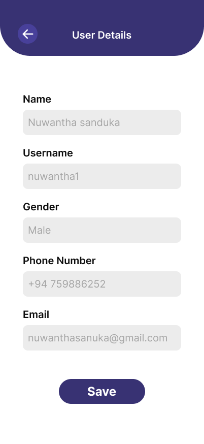

UI/UX CASE STUDY · MOBILE APP
My UniID
A student-focused educational mobile app concept that brings courses, assignments, timetables and essential academic activities into one simple experience.
View Figma Prototype ↗
01 · OVERVIEW
One place for everyday student tasks.
University students often move between different places to check course information, assignments, timetables and profile details. My UniID explores a cleaner mobile experience where those common academic tasks are organized inside one interface.
02 · THE CHALLENGE
Reduce friction in the student journey.
The design challenge was to create an interface that feels simple enough for frequent daily use while still giving quick access to the most important academic functions.
Design focus: clear navigation, fast access to key actions, readable information and a consistent visual hierarchy.
03 · SOLUTION
A focused dashboard with familiar actions.
Course Access
Quickly discover and open course-related content from the main dashboard.
Assignments
A dedicated entry point helps students reach assignment-related tasks without searching through multiple screens.
Timetable
Academic schedules are treated as a primary student action and kept easy to reach.
Profile & Account
User details, settings and account actions are grouped into a clean profile experience.
04 · DESIGN PROCESS
From the problem to an interactive prototype.
Understand
Identify common student tasks and the information that needs to be reached quickly.
Structure
Organize the experience around home, course, assignment, timetable and profile flows.
Design
Build a consistent interface using reusable cards, rounded fields, icons and navigation patterns.
Prototype
Connect the main screens in Figma to demonstrate the intended mobile interaction flow.
05 · VISUAL SYSTEM
Simple, calm and student-friendly.
The interface uses a deep indigo/purple primary color with generous white space, rounded containers and clear iconography. Large headings and simple cards help establish hierarchy without making the screens feel crowded.
#3D367FPrimary#5A50D6Accent#D8D5FFSoft UI#FFFFFFSurface06 · FINAL UI
Key screens from My UniID.
The final interface follows a simple student journey—from onboarding and authentication to the dashboard, profile, and account details.






07 · OUTCOME
A cohesive concept ready for further testing and iteration.
The final prototype brings the core student actions into a consistent mobile interface. A logical next step would be usability testing with students, followed by refinements based on task completion, navigation clarity and feedback.